✴
✴
✴
✴


1 / 7
| 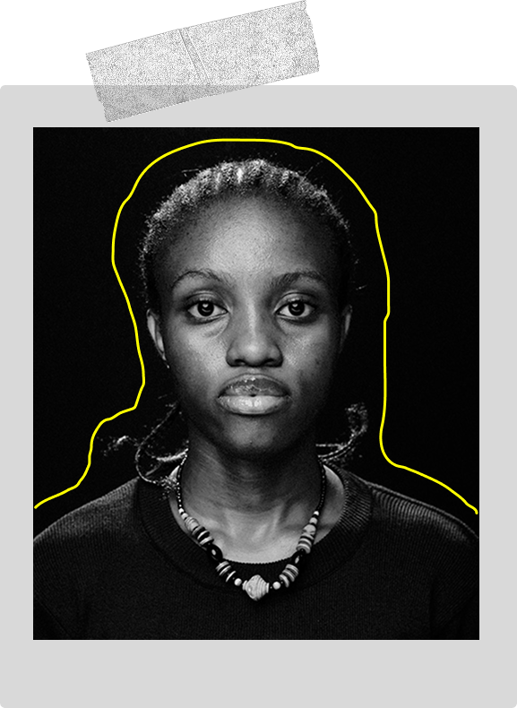 | Adut |
Adut, 17, drømmer om at blive læge, men står over for utallige forhindringer i jagten på sin uddannelse. Hendes valg vil forme hendes fremtid, men alle valg kommer med store ofre. |
|
|---|---|---|---|
 |
José |
José, en 23-årig aktivist, kæmper for at få sin ven Leila løsladt efter hendes arrestation under en demonstration. Brugeren træffer valg, der viser de farlige konsekvenser af politisk aktivisme i et undertrykkende regime. |
|
| 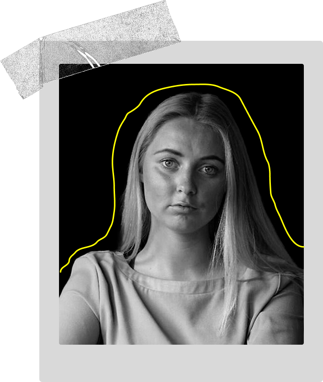 | Ida |
Her skal der stå noget info om Ida og hendes sag. bla bla bla bla bla. |
Her er information relateret til dit første valg.
Her er information relateret til dit andet valg.

2 / 7


 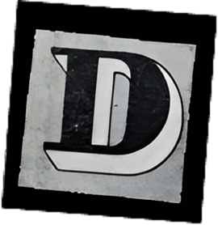
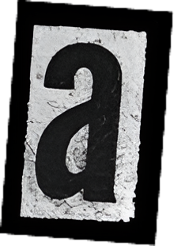
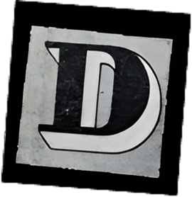
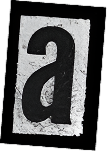

Det var en aften som så mange andre. Ida, 22 år, studerende,
ambitiøs, social – en helt almindelig ung kvinde i København. Hun
havde glædet sig til festen, klædt sig pænt på, grinet med sine
venner og danset til sange, hun elskede. Og så mødte hun ham. Han
var charmerende, sjov, virkede interesseret. De snakkede længe, og
det føltes rart. Trygt.
Et sted mellem latteren og de ufarlige berøringer forsvandt
kontrollen. Senere ville hun tænke tilbage og spørge sig selv:
Hvornår ændrede stemningen sig? Hvornår blev det utrygt? Hvornår
blev mit nej ikke længere hørt?
Hun husker brudstykker. Følelsen af at være låst fast. Af en krop,
der ikke længere reagerede. Af panik, der kæmpede mod en frygtlammet
stilhed. Og morgenen efter – den tomme, rungende erkendelse: Det
skete.
Dagen efter burde have været som alle andre. Men intet var som før.
Kroppen føltes fremmed. Huden kriblede, som om han stadig var der.
Hendes tanker kørte i ring: Var det min skyld? Gjorde jeg noget
forkert? Ville nogen overhovedet tro mig?
Nu står hun her. Foran et valg, der føles umuligt.
Hvad skal hun gøre?


Disse ikoner kan du trykke på, hvis du ønsker at få oplæst teksten på
siderne.
Den første knap er tænd/sluk og den anden er hvis
du ønsker at genoptage oplæsningen.

3 / 7
Valg 1: Gå til politiet og anmeld voldtægten
Valg 2: Tag på hospitalet og få en retmedicinsk undersøgelse
Valg 3: Fortælle det til en ven og søge støtte
Valg 4: Holde det for sig selv og forsøge at glemme det

 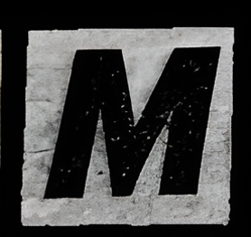
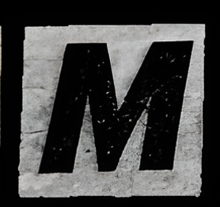

4 / 7
Ida står foran politistationen. Hendes hænder ryster. Hun har googlet,
hvad der vil ske – en lang afhøring, intime spørgsmål, og måske vil de
tvivle på hende. Hvad nu hvis de ikke tror på hende?
Indenfor bliver hun mødt af en betjent, der beder hende om at
forklare, hvad der er sket. Alt sammen. Ned til mindste detalje. Det
føles som at opleve det igen. "Havde du drukket?". "Var du tydelig nok
i dit nej?". "Har du nogen beviser?".
Hun mærker tvivlen i rummet. Politimanden virker venlig nok, men han
forklarer, at uden vidner og fysiske skader bliver det svært at bevise
noget. Sagen kan blive droppet.

.png)

.png) 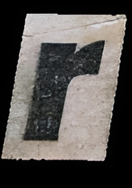
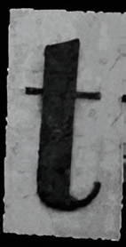
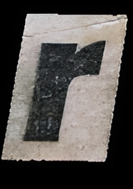
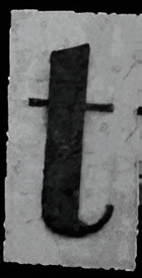
Ida sætter sig på briksen på hospitalet. Rummet er klinisk, koldt. En
sygeplejerske ser venligt på hende.
"Vi tager prøver for din skyld – men de kan kun bruges, hvis du vælger
at anmelde det."
Hun skal tage tøjet af. Lad nogen røre ved hende igen. En læge
undersøger hendes krop for blå mærker, tager prøver, spørger om
detaljer, hun knap nok selv tør tænke på.
Det er nødvendigt. Men det føles som endnu en invasion"
Ida sidder med sin bedste veninde på en café. Kaffekoppen mellem
hænderne er lun, men hun fryser.
"Der skete noget i går."
Veninden ser bekymret på hende, lytter, lægger en hånd over hendes.
Men så begynder spørgsmålene.
"Var du fuld?""Er du sikker på, at det var voldtægt?""Han virkede da
sød?"
Ida føler det velkendte stik af tvivl. Er det hende, der overdriver?
Men hun kan se venindens bekymring – og det gør alligevel en forskel.
Ida trækker dynen op over hovedet. Telefonen brummer med beskeder fra
veninderne. Men hun kan ikke svare. Hver gang hun lukker øjnene, er
han der. Lydene. Vægten af ham. Smerten.
Men hvis hun ikke taler om det, så er det måske ikke sket?
Dage bliver til uger. Hun kæmper for at koncentrere sig til
forelæsningerne, føler sig tung i kroppen. Hver gang nogen lægger en
hånd på hendes skulder, stivner hun.

5 / 7
Valg 1: Gennemgå afhøringen og håbe på en retssag |
|
|---|---|
Valg 2: Trække anmeldelsen tilbage, fordi det føles for voldsomt |
 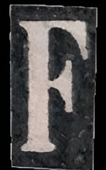
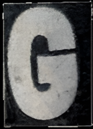
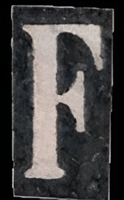
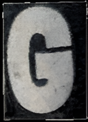
Valg 1: Bruge beviserne og anmelde voldtægten
Valg 2: Gemme beviserne, men vente med at tage en beslutning
Valg 1: Ignorere de tvivlende stemmer og fokusere på din egen heling
Valg 2: Prøv at forklare sig, men føle sig mistænkeliggjort
Valg 1: Søge hjælp hos en krisecenter eller psykolog
Valg 2: Undertrykke det og håbe, det går væk

6 / 7
Efter måneder i uvished får hun besked om, at sagen er droppet pga. manglende beviser.
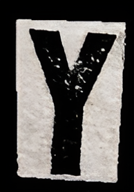

Hun fortryder senere, men får at vide, at sagen ikke kan genoptages uden nye beviser.
Politiet tager sagen alvorligt, men hendes ord bliver stadig sat op imod gerningsmandens. Uden vidner bliver det svært at opnå en dom.
Hun føler sig splittet, og efter uger i tvivl mister hun modet til at anmelde.
Hun isolerer sig og får det værre. Hun fortryder, at hun overhovedet sagde noget.
Hun bliver frustreret, da folk stadig ikke forstår, at samtykke skal være aktivt.
Hun møder andre i samme situation og finder langsomt styrke i at tale om det.
Hendes traumer forværres over tid, og det påvirker hendes hverdag.

7 / 7
Ida er fiktiv, men hendes historie er alt for virkelig. Hver 10.
kvinde i Danmark har oplevet en fuldbyrdet voldtægt eller et
voldtægtsforsøg, og i langt de fleste tilfælde kender offeret
gerningspersonen i forvejen. Alligevel bliver under 2 % af alle
voldtægter dømt ved en retssag.
Hvert år anslås det, at omkring 5.400 personer i Danmark udsættes for
voldtægt, men kun en brøkdel af tilfældene anmeldes. Mange oplever, at
de ikke bliver troet, og at retssystemet svigter dem. Samtidig viser
undersøgelser, at op mod 60 % af voldtægtsofre udvikler PTSD, hvilket
kan have alvorlige konsekvenser for deres livskvalitet.
Alt for mange står alene med skyld og skam, men ingen bør stå alene.
Vold og overgreb er et brud på menneskerettighederne, og der er brug
for forandring. Amnesty International arbejder for retfærdighed,
rettigheder og støtte til overlevende.
Du kan være med til at gøre en forskel. Tal højt om problemet, støt
ofre, og vær med til at kræve retfærdighed. Sammen kan vi skabe en
verden, hvor ingen står alene.
 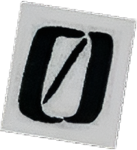
Del dit resultat
Læs andre historier
Bliv Frivillig
Tænd et lys
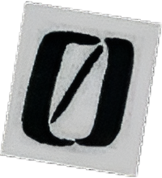
Del dit resultat
Læs andre historier
Bliv Frivillig
Tænd et lys

Download dit resultat og del det på de sociale medier!